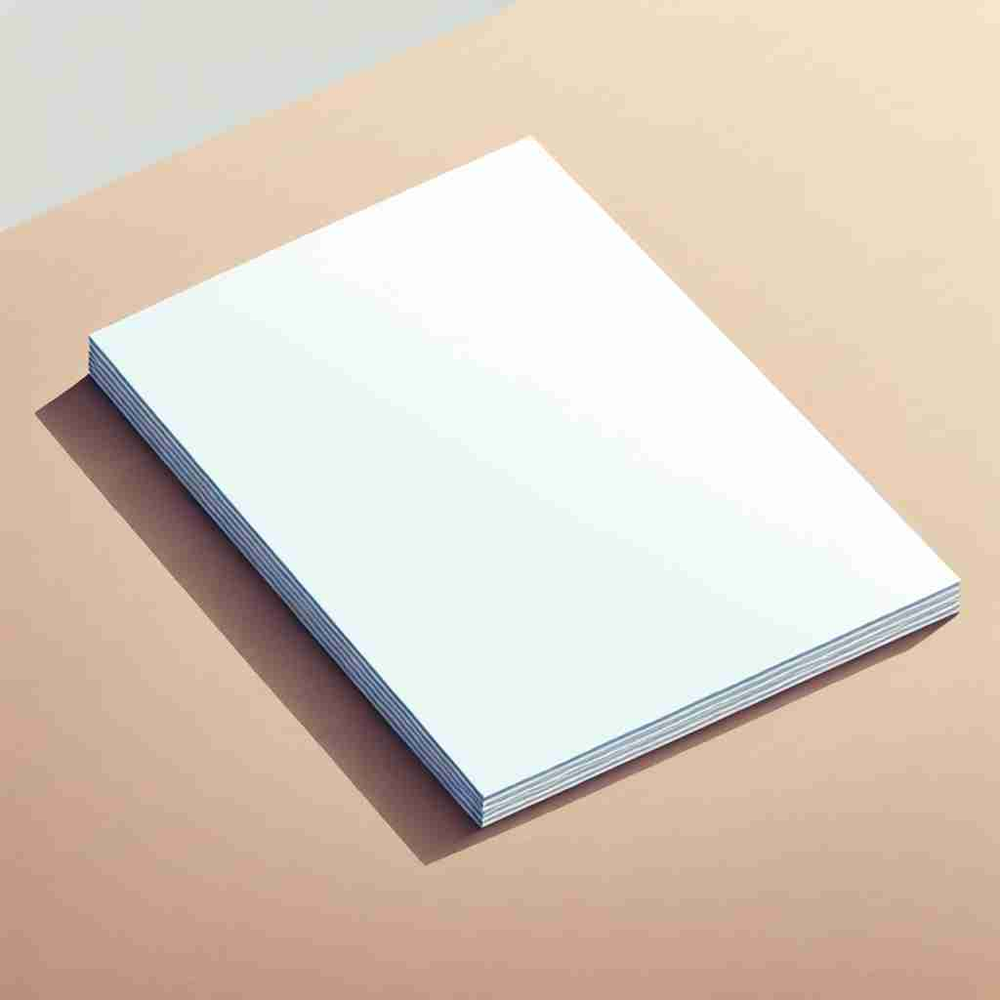

💬 She loves to write on paper every day. 她每天都喜欢在纸上写字。
💬 She uses wrapping paper to cover the gift carefully. 她小心翼翼地用包装纸包裹礼物。
💬 The documents are printed on paper. 文件是用纸打印的。

💬 The artist uses blank sheets of paper to create his drawings. 艺术家使用空白纸张创作他的画作。
🧠 想象一张纸在你手中。这张纸可以用来写字、印刷，也可以成为报纸、文件或学术论文。甚至可以用来装饰墙壁。所有这些含义都源于'paper'作为一种材料的核心概念。通过联想这张多功能的纸，你可以轻松记住'paper'的各种用法。
🔈 ['peɪpə]
🗝️ n. a material made from wood pulp, rags, or other fibrous substances, used for writing, printing, or drawing on 一种由木浆、破布或其他纤维材料制成的材料，用于书写、印刷或绘图。
🎭 在一个明亮的艺术工作室里，画家正在从巨大的纸卷上裁下纸张。他热情地将纸铺展开来，准备用颜料在上面创作。这展示了纸作为书写、印刷或绘画材料的用途。
💬 She wrote her essay on a sheet of paper. 她在一张纸上写了她的论文。
🌳 由词根 'papyrus' 演变而来，'papyrus' 是一种用于写作的纸草植物。在英语中，'paper' 直接表示 '纸' 或 '文件'。
🕸️ 1. papyrus: 纸草 2. paperback: 平装书 3. paperwork: 文书工作
💡 可以通过联想产品 'papyrus' 和纸张的关系，记住 paper 的意思。想象古代的纸草记录，帮助记忆这个词来源和含义。